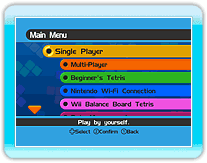

The following modes are
available for Tetris Party.
● Single Player
Single player Tetris,
featuring 5 different
variants.
● Multi-Player
Tetris for 2 to 4 players (including computer players), featuring 7 different variants.
● Beginner's Tetris
Single Player Tetris for beginners using simple Tetriminos. Only 1 variant available.
● Nintendo Wi-Fi Connection
Face-off against friends or players around the world over Nintendo Wi-Fi Connection.
You can also compete in tournaments and verify tournament information.
● Wii Balance Board Tetris
Single Player Tetris played with the Wii Balance Board, featuring 3 different variants.
● Data Management
Allows you to do things such as delete created data or create new data.
● Tutorial
A tutorial mode for viewing basic rules and how to play Tetris.
● Records
Allows you to verify personal records and results. You can also view World Ranking by connecting to Nintendo Wi-Fi Connection.
● Options
Allows you to adjust various settings of the game.